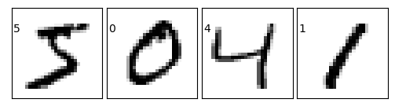
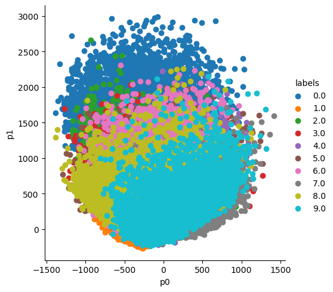

from pathlib import Path
import os
from sklearn.preprocessing import StandardScaler
from scipy.linalg import eigh
import pandas as pd
import seaborn as sns
import matplotlib.pyplot as plt
import numpy as np
import seaborn as sns
from sklearn.decomposition import PCA
from keras.datasets import mnist # MNIST dataset is included in KerasPCA Analysis
PCA detail walkthrough with help of MNIST Data Set

View Source Code | View Slides | Watch Video Walkthrough
Why PCA
Dimensionality reduction : Reduces variables.
Feature extraction : Identifies Important features
Data visualization : Turns into 2 or 3d features
Noise reduction : Reduces impact of noises
Multicollinearity detection : Detect correlated variables
Preprocessing and data compression : Simplifies and compresses the data
VIsualizing with help of MNIST
What is MNIST
MNIST is a simple computer vision dataset. It consists of 28x28 pixel images of handwritten digits, such as:
Every MNIST data point, every image, can be thought of as an array of numbers describing how dark each pixel is. For example, we might think of as something like:
Since each image has 28 by 28 pixels, we get a 28x28 array. We can flatten each array into a 28∗28=784 dimensional vector. Each component of the vector is a value between zero and one describing the intensity of the pixel. Thus, we generally think of MNIST as being a collection of 784-dimensional vectors.
While the MNIST data points are embedded in 784-dimensional space, they live in a very small subspace. With some slightly harder arguments, we can see that they occupy a lower dimensional subspace.
Downloading MNIST Dataset
# The MNIST data is split between 60,000 training images and 10,000 test image
(X_train, y_train), (X_test, y_test) = mnist.load_data()
print("X_train shape", X_train.shape)X_train shape (60000, 28, 28)Visualize Train Data
Lets us first see our train data
fig = plt.figure(figsize=(6, 6))
fig.subplots_adjust(left=0, right=1, bottom=0, top=1, hspace=0.05, wspace=0.05)
for i in range(4):
ax = fig.add_subplot(5, 5, i + 1, xticks=[], yticks=[])
ax.imshow(X_train[i], cmap=plt.cm.binary, interpolation='nearest')
# label the image with the target value
ax.text(0, 7, str(y_train[i]))
Reading the data using pandas
data = pd.read_csv(f'{compe}/train.csv')
data.head(3)| label | pixel0 | pixel1 | pixel2 | pixel3 | pixel4 | pixel5 | pixel6 | pixel7 | pixel8 | ... | pixel774 | pixel775 | pixel776 | pixel777 | pixel778 | pixel779 | pixel780 | pixel781 | pixel782 | pixel783 | |
|---|---|---|---|---|---|---|---|---|---|---|---|---|---|---|---|---|---|---|---|---|---|
| 0 | 1 | 0 | 0 | 0 | 0 | 0 | 0 | 0 | 0 | 0 | ... | 0 | 0 | 0 | 0 | 0 | 0 | 0 | 0 | 0 | 0 |
| 1 | 0 | 0 | 0 | 0 | 0 | 0 | 0 | 0 | 0 | 0 | ... | 0 | 0 | 0 | 0 | 0 | 0 | 0 | 0 | 0 | 0 |
| 2 | 1 | 0 | 0 | 0 | 0 | 0 | 0 | 0 | 0 | 0 | ... | 0 | 0 | 0 | 0 | 0 | 0 | 0 | 0 | 0 | 0 |
3 rows × 785 columns
print(f'Shape of the data:{data.shape}')Shape of the data:(42000, 785)labels = data['label']
features = data.drop('label',axis =1)
print(f'Shape of features:{features.shape}')Shape of features:(42000, 784)Making Covariance matrix
standarized_data = StandardScaler().fit_transform(features)
covar_mat = np.matmul(standarized_data.T,standarized_data)
print(f'Shape of covariance matrix:{covar_mat.shape}')Shape of covariance matrix:(784, 784)values, vectors = eigh(covar_mat,eigvals = (782,783))
vectors = vectors.T
print(f'Shape of Vectors : {vectors.shape}')Shape of Vectors : (2, 784)new_cords = np.matmul(vectors,features.T)
print(f'Shape of Vectors : {new_cords.shape}')Shape of Vectors : (2, 42000)new_cordinates = np.vstack((new_cords,labels)).T
df = pd.DataFrame(data=new_cordinates,columns = ('p0','p1','labels'))
df.head(2)| p0 | p1 | labels | |
|---|---|---|---|
| 0 | -540.331669 | 122.904004 | 1.0 |
| 1 | 339.624235 | 2318.125463 | 0.0 |
VIsualizing principal features
sns.FacetGrid(df,hue='labels',height = 5).map(plt.scatter,'p0','p1').add_legend()
plt.show()
Extra Resources for PCA
For visualization use this colah beautiful site : Colah Website
For Visulazation of MNIST : ML Addict
Next advancement to PCA -> T-SNE : Distil Pub
Understanding Principal Component Analysis : Medium Blog